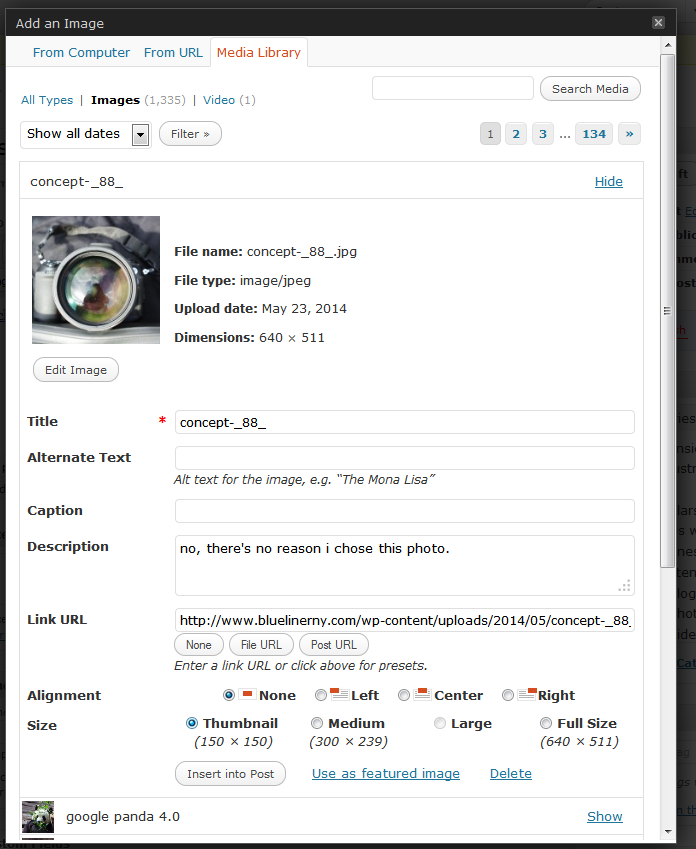
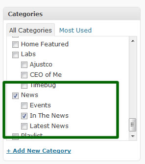

making posts is pretty self explanatory, here is a run down of what you need to do. Various versions of wordpress might look different,
but generally everythings in the same place and does the same things.
1:
From the The posts panel click Add New and you get a blank write post page (click above for bigger pic)
2:
Add The post title here, it can be whatever you wish. wordpress will take what you write here and convert it into a url name with no spaces.
so if you add a Title of "My New Post", the url of the page when you view it on the site, what wordpress calls the "permalink' will become /my-new-post, this is done automatically.
beneath the title box, youll be able to edit the permalink if you want, but generally you can leave it alone for blog posts.
3:
this is the content area, simpley type in whatever you like as normal, insert images etc.
4:
this is just basic formtting ToolBox, most you will never use, but simply hover over a button for a description of what it does. its pretty standard stuff.
right above ToolBox you will see the "upload/insert" option, the first icon is what you click when you want to add an image.
the most common thing youll use the toolbox for besides simple formatting is to add links. just type in a word you want to be a link. select the text and click the chain icon, youll be able to add a link url in the pop-up.
the other thing will be adding images/thumbnails to a post.. click inside the content area where you would want to insert a picture.
click the image icon by the "upload/insert" option.. and a new window will appear.

again, everything is self explanatory, from the top tabs, you can select an option to upload a picture from your computer, a web link (youll never really do this)
or to select an image that was previously uploaded to the site.
again, much of the options you wont need to worry about, but its all self explanatory... the link url is where you would add any website page you would want an image to link to,
for regular posts, youd likely want to alight an image to the left (so text scoots around it) and then use one those image size options to have wordpress automatically resize a large image for you.
(for the slider on blueliner.. you want to make sure to use the full size option for an image already sized to 720x315 pixels.)
whenever your done just click insert into post, and continue editng copy.
5:
this is the Category box that contains all the parent categories and child categories on the site.
for "regular" blog posts, that is to say any posts that will appear in the blog section..
http://www.bluelinerny.com/blog
you can select any of the categories you see EXCEPT the following.

the "news" parent category and the 3 child categories are reserved for posts that you ONLY want to appear in the news section of the site.
the sites template will use these particular categories to serve up pages that look Different from the normal blog pages. so its important that you dont choose these categories when you make a regular blog posting.
there is also one "home featured" category that should ONLY be used for posts intended for the home page slider of the site.
all other categories you see are ok to use for blog postings.
6:
this is the publish box, much you wont ever use (like changing the date)
but here you can save a draft (no one will see the post so you can save your inprogress work to finish up later)
you can preview a page your currently working on...this is good to use often to see how your post will actually look "live" on the site.
and the publish button...this will actually make your post live on the sight.